|
|
|
|
|
|
|
|
Select which column items to display, the order of columns, the column titles for each language, the column width, and the font and font size for the specified language in the Columns tab.

The Columns tab is not available for targets with a panel size of 200x80.
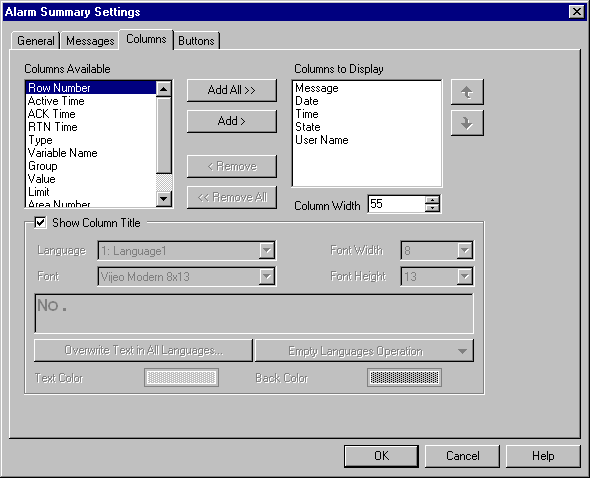
You can add and remove columns from the summary. The items in the Columns Available box are items you can add to the summary. Once you add a column, it is moved from the Columns Available list to the Columns to Display list.
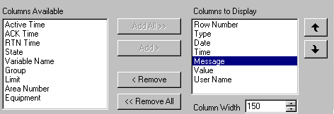
Use the  or
or  icons to move a column up or down in the display order.
icons to move a column up or down in the display order.
Column order is from left to right in the alarm summary.
The following tables describe column items.
|
Property |
Description |
|
Row Number |
Column for numbering messages in the summary. For example: 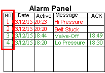
|
|
Area Number |
When displaying diagnostic alarm groups, this column displays the alarm's diagnostic buffer area. See Section 16.3.2.1, Displaying Diagnostic Alarms. |
|
Date |
When Display Mode is Active or History: When Display Mode is Log: |
|
Time |
When Display Mode is Active or History: When Display Mode is Log: |
|
Active Time |
Column for displaying the time when the alarm was triggered. This column is blank for events. |
|
ACK Time |
Column for displaying the time when the alarm was acknowledged. This column is blank for events. |
|
RTN Time |
Column for displaying the time when the alarm transitioned to Returned to Normal (RTN) state. This setting is not available when the display mode is Active. This column is blank for events. |
|
Message |
Column for displaying the alarm or event message. |
|
State |
Column for displaying the alarm state: Active, Acknowledge (ACK), Not Acknowledged (UNACK), and Returned to Normal (RTN). This column is blank for events. |
|
Type |
When displaying BOOL variables: When displaying Integer or REAL variables: 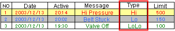 For more information on monitoring BOOL, Integer and REAL variables, see Section 16.3.3, Word Alarms. This column is blank for events. |
|
Variable Name |
Displays the name of the variable that generated the alarm. This column is blank for events. |
|
Group |
Displays the alarm or event group name. |
|
Displays the logged in operator’s user name that acknowledged the alarm or event. The name only displays if Track Users in Alarms is enabled. For more information on the Track Users in Alarms feature, see Section 16.2.3, Setting up the Alarms and Events Node: Track Users in Alarms. |
|
|
Value |
Displays the variable value when the alarm was triggered, acknowledged, not acknowledged (UNACK), or returned to normal. This column is blank for events. |
|
Limit |
Column used for integer or REAL variables. Displays the limit that was exceeded by the variable to generate the alarm. This column is blank for events. For more information on how to monitor integer and REAL variables, see Section 16.3.3, Word Alarms. |
|
Equipment |
Displays the name of the equipment the external alarm variable is associated with. This column is blank for events. |
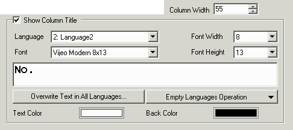
|
Column Width |
Set the width of each column, in pixels. 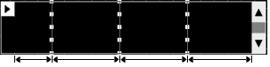
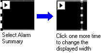 |
|
Show Column Title |
When selected, the title displays for each column in the alarm summary. By default, the column title displays in the language selected in the Installer. 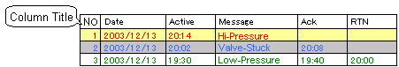 You can change the column titles in the Column Display tab. Column names can be up to 32 characters in length. 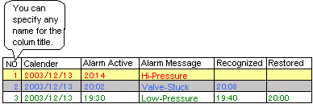 |
|
Language |
Select the language you want displayed for the strings in the summary. You can display different column titles for different languages. 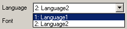 |
|
Font |
Set the font and font size for columns in each language. 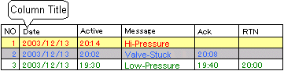
|
|
Font Width |
|
|
Font Height |
|
|
Overwrite Text in All Languages |
If multiple languages are set in the project, you can overwrite the text in each language with the text defined in the columns, by clicking Overwrite Text in All Languages. The column titles display in all languages. |
|
Copy Text to Empty Languages |
Available when multiple languages are set in the Language node. Click the list box and select one of the following:
|
|
Text Color |
Sets the font color for the column titles. |
|
Back Color |
Sets the color for the column title area. |